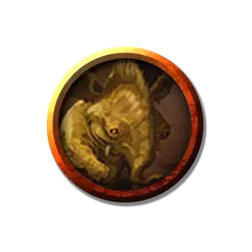

Лулу
Lulu
Маленький Небожитель, законно-добрый, именной НИП

Класс Доспеха 18 (природный доспех)
Хиты 36 (8к6 + 8)
Скорость 20 футов, летая 120 футов
| мод | спас | ||
|---|---|---|---|
| СИЛ | 10 | +0 | +0 |
| ЛОВ | 11 | +0 | +3 |
| ТЕЛ | 12 | +1 | +4 |
| мод | спас | ||
|---|---|---|---|
| ИНТ | 16 | +3 | +3 |
| МДР | 19 | +4 | +4 |
| ХАР | 16 | +3 | +6 |
Сопротивление урону дробящий, колющий, рубящий от немагических атак
Иммунитет к урону яд
Иммунитет к состояниям отравление
Чувства пассивное Восприятие 14
Языки Небесный, Телепатия 120 фт.
Опасность 5 (1800 опыта)
Бонус мастерства +3
Особенности
Аура неуязвимости. Невидимая аура образует сферу радиусом 10 футов вокруг святослона, пока он жив. Любое заклинание 5-го круга или ниже, наложенное за пределами барьера, не влияет на существ и объекты в пределах барьера, даже если оно наложено с использованием ячейки более высокого уровня. Такое заклинание может быть нацелено на существ и объекты под защитой барьера, но не подействует на них. Аналогично область в пределах барьера исключена из областей, на которые воздействуют заклинания извне. Святослон может действием подавить эту особенность, пока сохраняет концентрацию (как если бы концентрировался на заклинании).
Врождённое колдовство. Базовой характеристикой святослона является Мудрость (Сл спасброска от заклинания 15). Святослон может накладывать следующие заклинания, нуждаясь только в вербальных компонентах:
• Неограниченно: свет [light];
• 2/день каждое: благословение [bless], лечение ран [cure wounds], защита от зла и добра [protection from evil and good];
• 1/день каждое: изгнание [banishment], полное исцеление [heal], оживление [raise dead], полное превращение [shapechange] (в золотистого мамонта [mammoth] с пернатыми крыльями и скоростью полёта 120 футов), телепортация [teleport] (без шанса ошибки).
Магическое оружие. Атаки оружием святослона являются магическими.
Отыгрыш Лулу. Во всём тельце Лулу нет ни одной злой косточки. Она верит в магию дружбы и мечтает надрать злодеям попки плечом к плечу с персонажами.
Если вас утомит играть за Лулу как персонажа мастера, можете отдать её одному из игроков как второго персонажа. Дайте согласному на это игроку копию блока параметров Лулу, отметив, что сейчас у Лулу нет особенности Врождённое колдовство. Когда к ней вернутся воспоминания и отдельные заклинания, сообщите игроку об этих переменах в персонаже.
Действия
Бивни. . Рукопашная атака оружием: +3 к попаданию, досягаемость 5 футов, одна цель. Попадание: 3 (1к6) колющего урона.
Труба (3/день). Святослон трубит в свой хобот, этот звук слышно на расстоянии до 600 футов. Трубный звук создаёт 30 футовый конус энергии с одним эффектом по выбору святослона:
• Звучная труба. Каждое существо в конусе должно совершить спасбросок Телосложения Сл 14. При провале существо получает 17 (5к6) урона звуком и глохнет на 1 минуту. При успехе существо получает половину этого урона и не глохнет. Немагические предметы в конусе, которые не носят и не несут, получают 35 (10к6) урона звуком.
• Искристая труба. Все существа в конусе должны совершить спасбросок Телосложения Сл 14. При провале существо получает 22 (4к8 + 4) урона излучением, при успехе— половину этого урона. Злые существа совершают спасбросок с помехой. Добрые существа в конусе не получают урона.
Описание
Лулу— оллифант, она потеряла память и особенность Врождённое колдовство (это не влияет на ПО). Врождённое колдовство вернётся к ней в ходе приключений следующим образом:
- В главе 2 к Лулу вернётся способность неограниченно накладывать свет, когда она впервые попадает в Эльтурель.
- В главе 4 к Лулу вернутся накладывать два раза в день заклинания (благословение, защита от зла и от добра и лечение ран), когда она попадёт в Кровавую Цитадель.
- В главе 5 к Лулу вернутся накладывать один раз в день заклинания (оживление, изгнание, полное исцеление, полное превращение и телепортация), когда она поможет вернуть Зариэли её меч.
Эти милые и верные существа родом с Верхних планов. Добрые божества и ангелы используют их как гонцов и помощников. Святослоны ценят дружбу и честность.
Святослон похож на маленького слоника с блестящей золотистой шерстью и небольшими, быстро порхающими крылышками, которые не просто поддерживают его в воздухе, но и разгоняют до большой скорости. Святослоны добродушны, но не выносят вида злых дел и стараются покарать злодея. Их жемчужные бивни не так уж грозны, но они способны издавать хоботом трубный рёв, оглушающий существ или окутывающий злодеев сверкающими искрами позитивной энергии. Святослоны также наделены сильной врождённой магией, помогающей бороться со злом и защищать друзей.